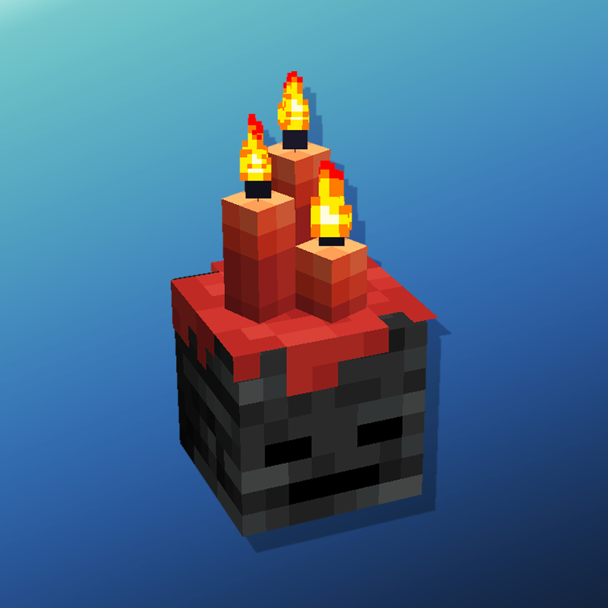
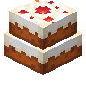

Amendments
共 15 个条目 · amendments
版本: 1.21-2.1.7 · 来源: amendments-neoforge-1.21-2.1.7.jar
Many tweaks to Vanilla Blocks
MC百科页面: https://www.mcmod.cn/class/13860.html（Amendments）
官方介绍 （Modrinth · 联网获取）
You can use this mod in your Modrinth Modpacks!
📖 About 📖
Amendments is a very configurable mod focused around tweaks to many of existing vanilla blocks.
The mod aim is to give more functionality and improve the visuals of many vanilla features without adding new ones.
The mod was born as a merge of some of our existing mods. As such you wont need to install them anymore. These are:
Carpeted stairs Better Lilypads Better Jukeboxes Some Supplementaries features
Some of the mod most prominent features are:
Cauldron potion mixing Wall Lanterns and Lantern Holding Animation Skull Piles and Candle Skulls Better Lectern GUI
🖼️ Features🖼️
Cauldrons
Can store ANY liquid Can be used to Mix Potions and Dyes When clicked on will attempt to craft the item in your hand with the liquid they contain Have improved animations with splash and bubble particles when falling on as well as missing sounds When holding water or a potion can Boil if they have a heat source below Boiling cauldrons can inflict boiling damage Stepping into a splash or lingering potion cauldron will apply that potion Improved model with Translucency and Ambient Occlusion
Lecterns
When holding a Book and Quill will have a new GUI that adds a Quill button and an Ink Well button Click on the Ink Well to cycle between available font colors Click on the Quill to cycle between available fonts Can now interact with hoppers!
Lanterns
Have a new 3D animation when held in hand Works both in first and third person Can be hung on walls. Works with ANY lantern When hanging will have pendulum physics!
Hanging Signs
Can hold any item on both their faces Can also display a banner patterns (requires Supplementaries) When attached to walls will swing with physics! Will display a visual connection when attached to fence, walls or similar blocks
Jukeboxes
Now visually show the disc they are playing They come with new and improved model Disc show will also spin while it's playing Works with ANY disc, modded or not
Carpets Can be placed on Slabs Can be placed on Stairs Same goes for moss carpets
Cakes Can be stacked by placing two ontop of eachother. Works with ANY cake Vanilla cakes can also be rotated
Lilypads
Can have any block placed on them This works by making them occupy the block below, turning them into a waterlogged block Will revert back when the block is removed Can be made to work with any lilypad (feedback needed)
Mob Skulls
Can be stacked. Works with ANY skull in any combination Can have candles placed ontop Candle will leave a wax overlay on the skull
Brewing Stands
Now will have their potion bottles colored according to what they are holding
Banners & Pots
Can be placed on ceilings
Bells Can visually connect to chains and ropes below them Can be ring by clicking chairn / rope below them
❤️Support Me❤️
Modding is taking a lot of my time, so if you like what I do, and you would like to support me, you can do so here. If you do, you'll receive a custom Globe and or Statue just for you! This also applies if you purchase a server from Akliz using "supplementaries" code.
Need a server? Check out Akliz, they have top brand servers just for modded minecraft. They really have a cozy community with great support and the servers wonderfully Use code "supplementaries" to get 20% off and also support me in the process!
❓ F. A. Q.❓
Q: How do I disable/tweak X feature? A: Refer to the Customization section in the Wiki or join our Discord
🦉 Our Mods🦉
资料来源：Amendments（自动匹配，仅供参考）
物品与方块
amendments:candle_skull · 方块?地毯台阶
amendments:carpet_slab · 方块?地毯楼梯
amendments:carpet_stairs · 方块?吊顶旗帜
amendments:ceiling_banner · 方块多向蛋糕
amendments:directional_cake · 方块

双层蛋糕amendments:double_cake · 方块
 龙弹
龙弹amendments:dragon_charge · 物品
 染料瓶
染料瓶amendments:dye_bottle · 物品?装有染料的炼药锅
amendments:dye_cauldron · 方块
 悬挂式花盆
悬挂式花盆amendments:hanging_flower_pot · 方块?悬挂式花盆
amendments:hanging_pot · 方块?装有液体的炼药锅
amendments:liquid_cauldron · 方块
 头颅堆
头颅堆amendments:skull_pile · 方块?工具钩
amendments:tool_hook · 方块?墙上的灯笼
amendments:wall_lantern · 方块